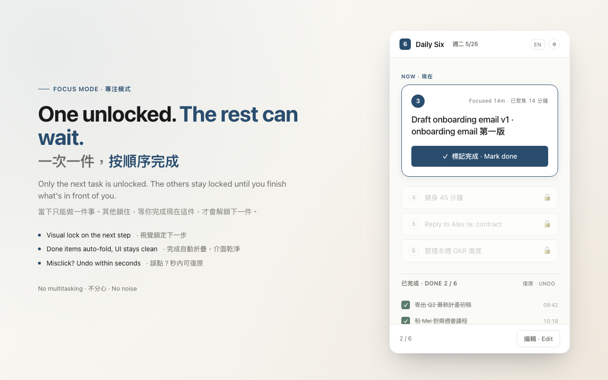

每天 六件事，一次只做一件
A dead-simple to-do tool that lives in your Chrome Side Panel. Pick six tasks the night before, do them in order, and actually finish your day.
一個住在 Chrome 側邊欄的極簡待辦工具。前一晚挑出六件事，依序完成，真正把一天結束掉。

Only the current task is unlocked. No endless list to stare at — just the next thing. 只解鎖目前這一件，沒有無止盡的清單，只有下一步。
Six tasks a day, rollovers included. A real sense of done instead of a growing backlog. 每天最多六件（含結轉），給你明確的完成感。
Unfinished items ask you each morning: bring to today, or let go? You stay in charge. 未完成的隔天會問你：帶到今天還是放下？
No account, no server, no tracking. Everything stays in your browser. 不需帳號、沒有伺服器、不追蹤，資料只存在你的瀏覽器。
Switch between 中文 and English instantly — UI and notifications follow. 介面與通知都能在中英間即時切換。
Optional reminders, adjustable retention, one-click JSON export. 提醒可關、保留天數可調、一鍵匯出 JSON。